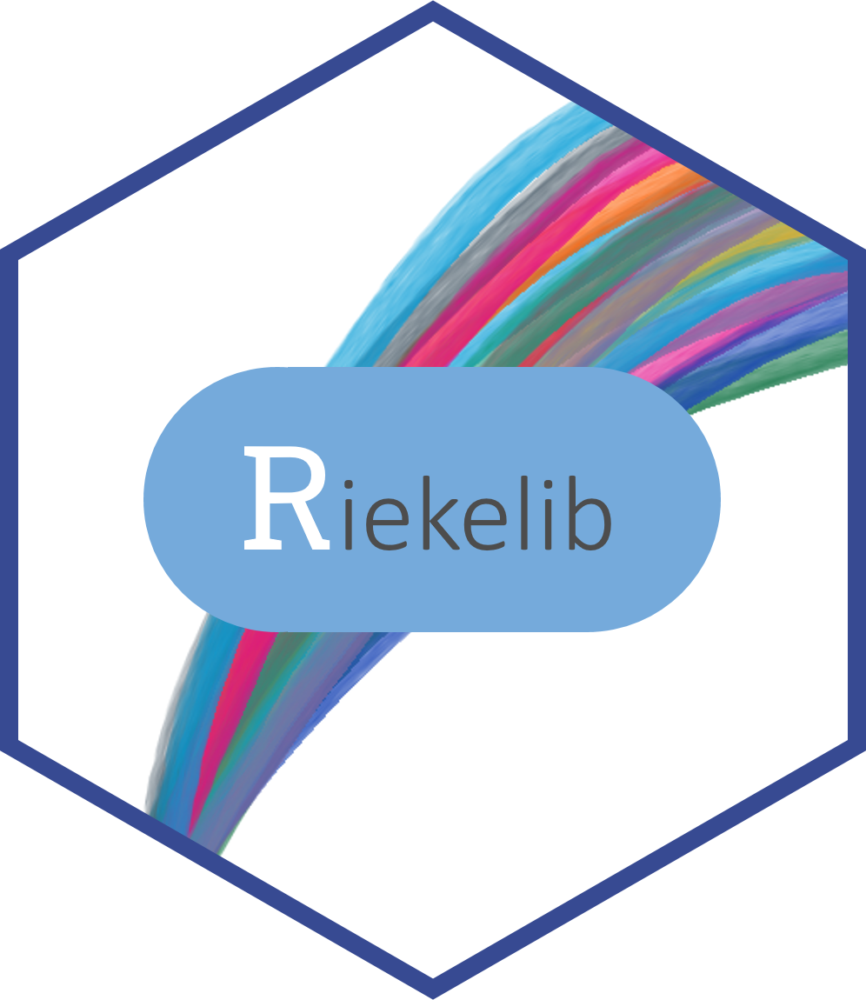

Changelog
Source:NEWS.md
riekelib 0.3.1
New features
-
standardize()function added for centering and scaling values.
Minor bug fixes and improvements
-
theme_rieke()now correctly applies markdown formatting to axis text. -
theme_rieke()now defaults to Playfair Display as the title family. - Package startup messages no longer display in non-interactive settings.
riekelib 0.3.0
Conscious decoupling
Per #22, I’m moving functions that are specific for manipulating Qualtrics survey data for Memorial Hermann into their own package, {heRmann}.
The following functions from riekelib 0.2.0 have been moved:
fetch_surveys()deduplicate_ip()fix_survey_names()rnps()qnps()
The following functions were available in riekelib 0.2.0.9000 as of 8/22/23, but were removed on 8/23/23.
set_recode_path()read_recodes()fix_campus_names()
riekelib 0.2.0
New features
Gaussian process functions
-
cholesky_decompose(): generate the lower triangular Cholesky decomposition of a matrix (consistent with Stan’s implementation). -
cov_exp_quad(): generate a covariance matrix using the exponentiated quadratic kernel. -
condition_gaussian_process(): generate new draws from a multivariate normal distribution by conditioning on a Gaussian Process.
ggplot2 functions
-
scale_xy_percent(),scale_x_percent(), andscale_y_percent()provide shortcuts for formatting axis labels withscales::label_percent(). -
scale_xy_comma(),scale_x_comma(), andscale_y_comma()provide shortcuts for formatting axis labels withscales::label_comma().
Minor bug fixes and improvements
-
ggquicksave()now uses ragg by default. -
theme_rieke()now uses the fonts Tiempos Text and IBM Plex Sans for the title and other text, respectively, by default. - Where applicable, functions now use the
.datapronoun from rlang. This removes the need forglobals.R.